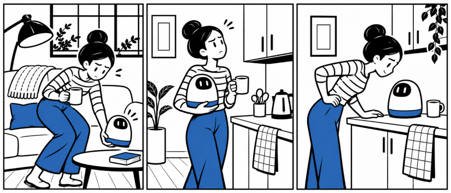
Desktop companionNearby only at the surface you stay with—easy to miss when you move through the home.
Quiet Company
A floating companion that shares your space through gentle three-dimensional movement—present when you need it, quiet when you don’t.
Explore the project →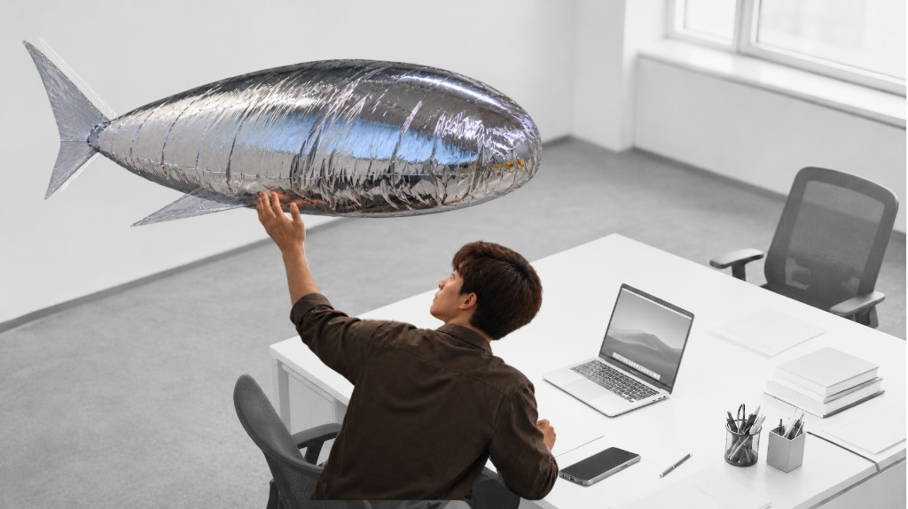
01 / Background & Challenge
At home, people often want something between being with others and being alone—a quiet presence that keeps them company without asking for conversation, explanation, or constant attention.
We explore how a flying robot’s movement in everyday indoor space could offer that bounded companionship: close enough to feel supported, distant enough to protect personal space.
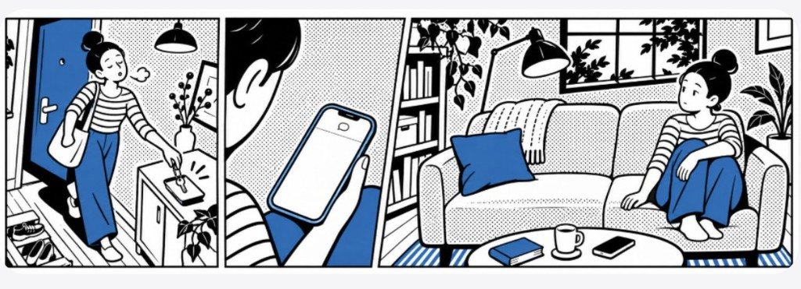
How can a flying robot use three-dimensional movement to offer responsive companionship and support emotional connection, while respecting personal boundaries and avoiding additional social pressure?

Desktop companionNearby only at the surface you stay with—easy to miss when you move through the home.
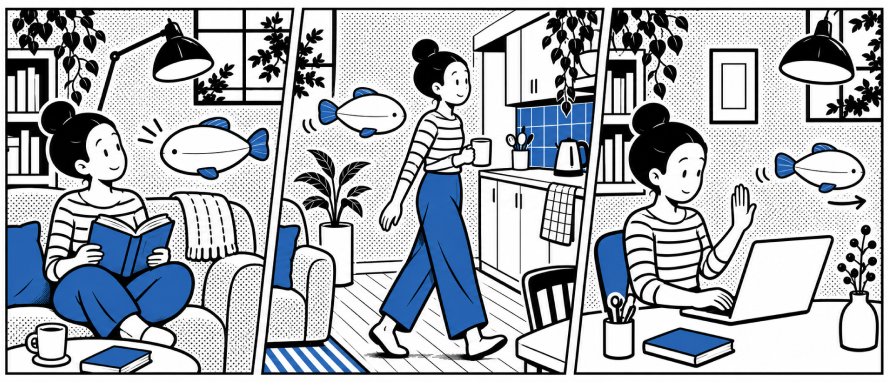
Our flying companionShares the rooms you pass through—present along the way, without demanding talk.
02 / Vision & Framework
Sensing, AI agent, spatial interaction, and flight control—who owns each layer, and what runs on the fish versus the digital device.
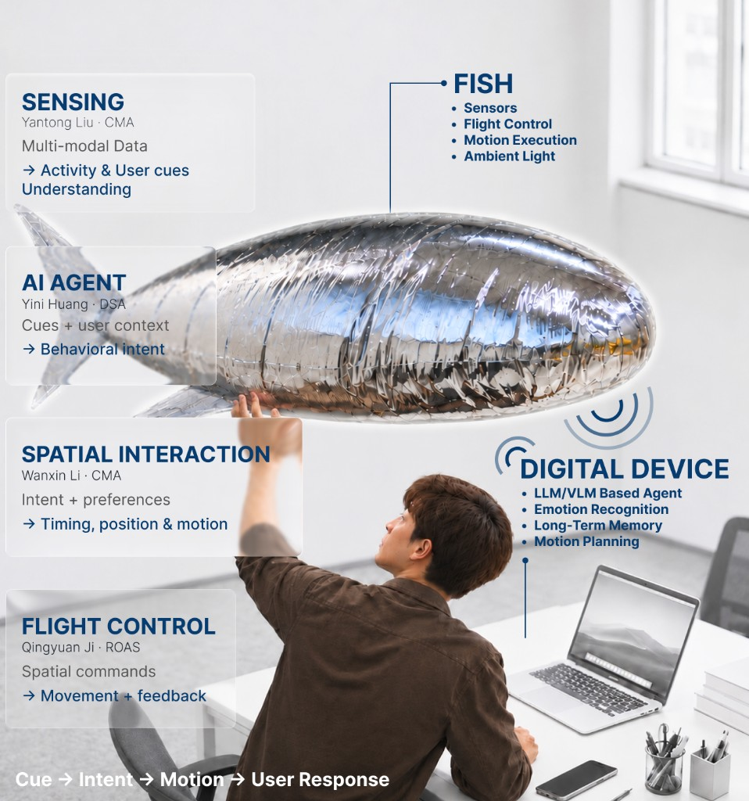
03 / Interaction scenarios
Four ways of being nearby—each paired with a moment from the room.
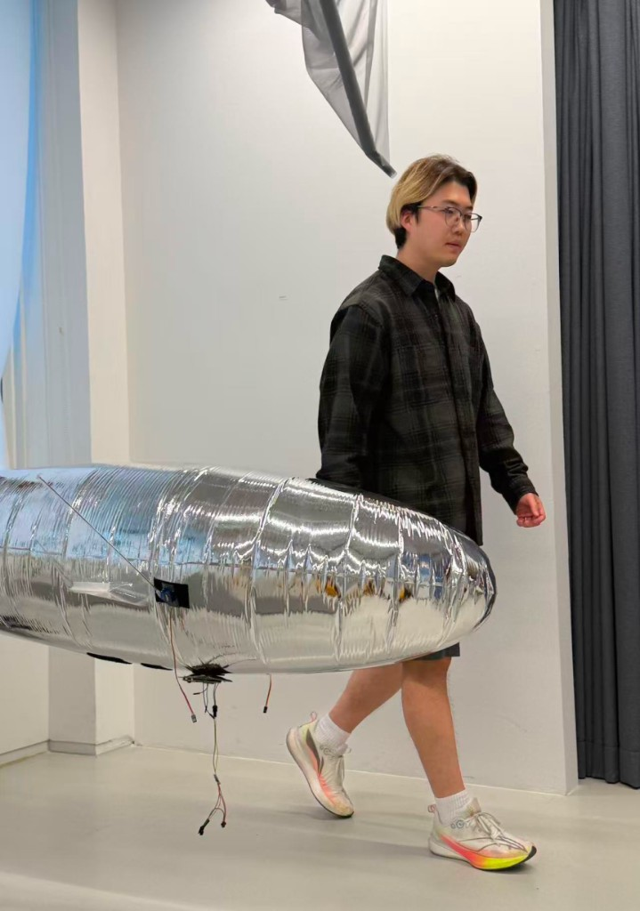
Peb glides alongside the user, adapting to their pace and direction while maintaining a comfortable distance.
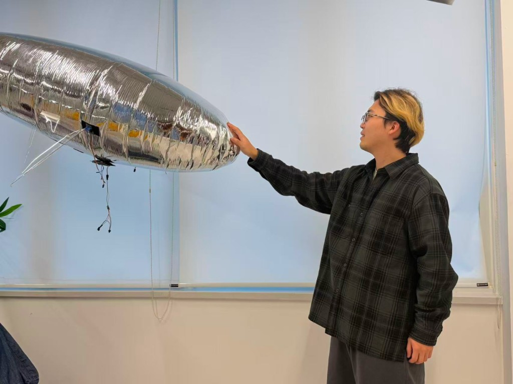
Before starting an interaction, Peb checks whether the user is ready.
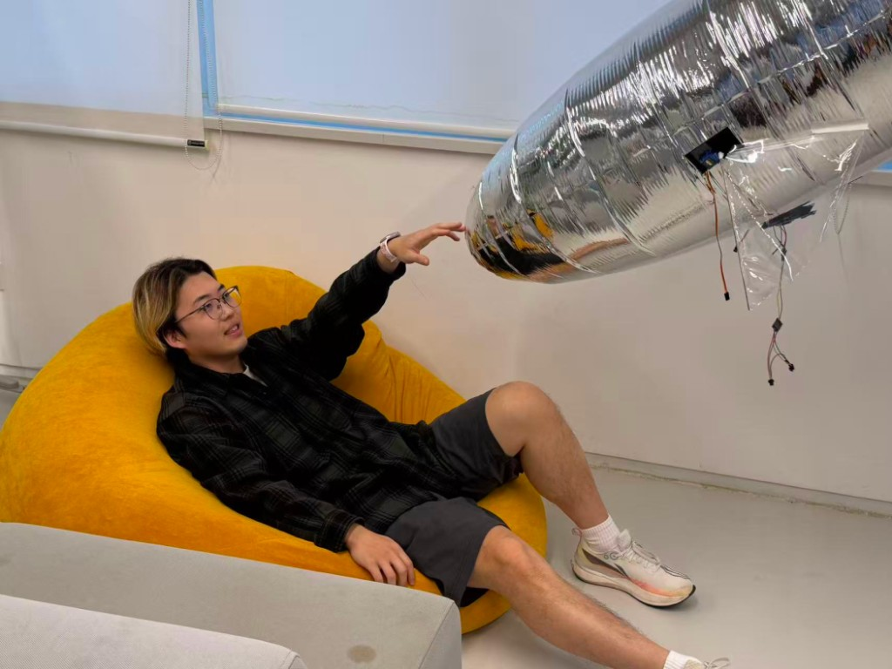
When the user is resting, Peb stays nearby without demanding attention, offering a calm sense of presence.
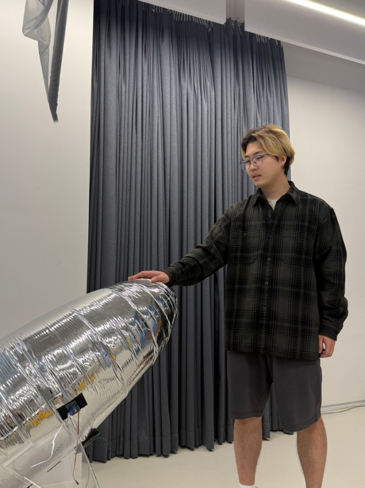
Peb responds to gestures and touch with playful movements, creating an expressive two-way interaction.
More moments in the room
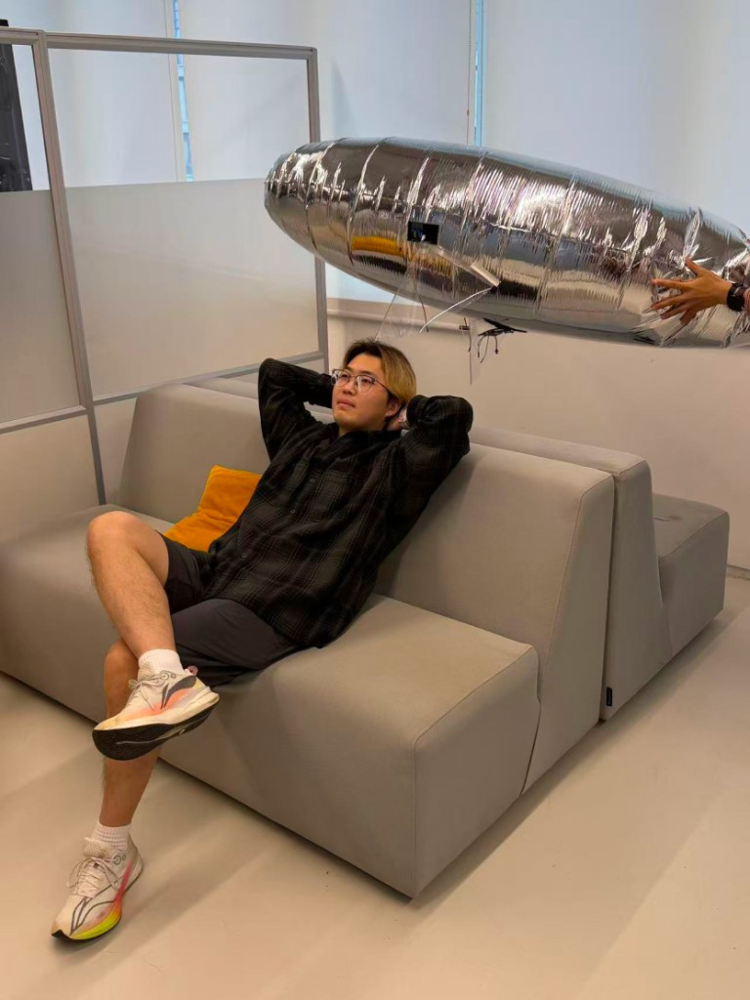
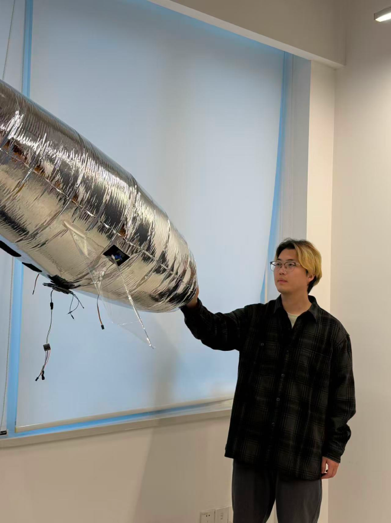
Why the name Peb? From “pebble”—small, gentle, and connected to water, just like our little floating fish.
04 / Current outcomes
Structure, sensing, agent, and research—each kept with its own visual.
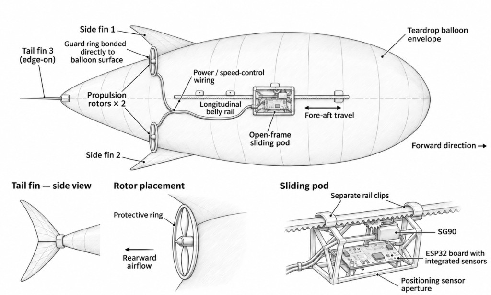
Driven by two rotors, with pitch adjusted by a slide rail and the tail fin assisting in balance.
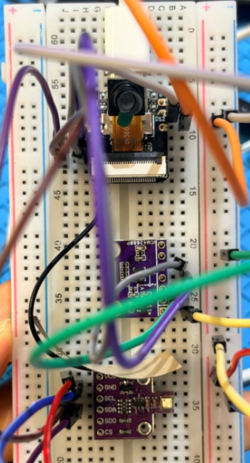
Modalities and board architecture are defined. Scene, audio, expression, and action analysis have been explored. Visual sensing is still open.
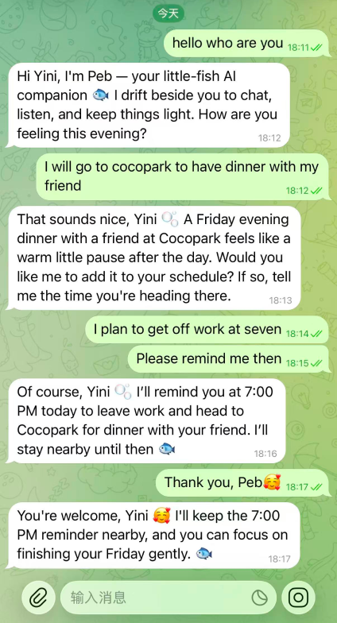
An LLM/VLM-based agent explores emotion recognition, long-term memory, and motion planning—gentle in chat as well as in space.
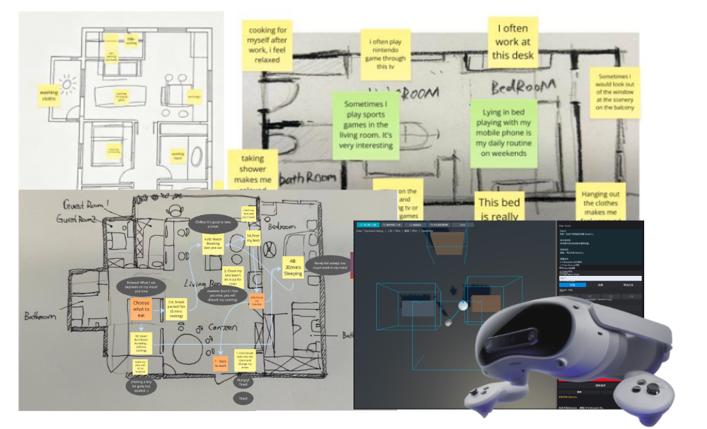
Co-design mapped everyday activities and emotional needs. An MR prototype helps explore timing and distance in real rooms.
Moving across heights and positions to share everyday space through three-dimensional movement.
Shared physical presence and everyday interactions that build familiarity over time.
Adapting timing, distance, and movement to each person’s preferences.
Limitations still in view. Indoor size, flight stability, noise, and endurance may constrain domestic use. Integration and longer-term emotional adaptation still need validation.
05 / The team
Qingyuan Ji / Yini Huang / Yantong Liu / Wanxin Li